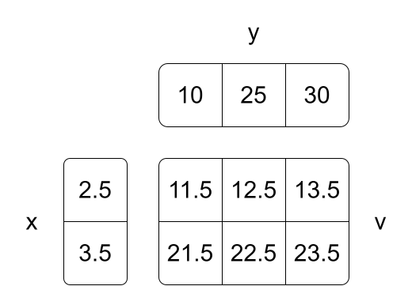
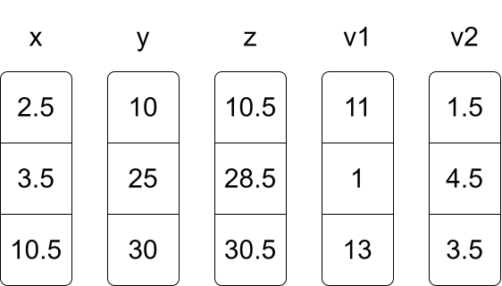
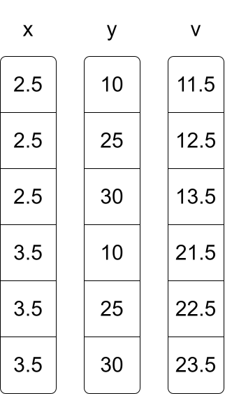

Based on FMI 3.0, this layered standard defines how variables (especially parameters) of an FMU can be structured and grouped in a more flexible way than with the "structured naming convention" of the FMI Standard. The first version of this layered standard is focused on the definition of sampled maps.
Copyright © 2024-2026 The Modelica Association Project FMI.
This document is licensed under the Attribution-ShareAlike 4.0 International license. The code is released under the 2-Clause BSD License. The licenses text can be found in the LICENSE.txt file that accompanies this distribution.
1. Introduction
1.1. Motivation
For many use cases, the grouping of variables gives the user a better overview of the usage of variables. For certain groupings the importing tool might be able to provide a more user-friendly interface. FMUs might use maps/functions sampled on the vertices of a grid to calculate output values. The values at these sampling points and even the locations of the sampling points might get exposed as parameter variables of the FMU to allow calibrations. However, the FMI standard only defines n-dimensional array variables but doesn’t define any relation between these variables. This layered standard defines how to group variables to represent maps.
This layered standard uses terminals of the FMI 3.0 standard to represent structures like maps by grouping variables in terminals. Terminals are used to group variables and already define means to connect its member variables between FMUs. Such a connection could ensure that the same map values are used by different FMUs or allow one FMU to provide the map values to be used by other FMUs.
1.2. How to Read This Document
The standard document is in HTML allowing use of in-document links.
In key parts of this document, non-normative examples are used to help understand the standard.
Conventions used in this document:
-
Non-normative text is given like this:
Especially examples are defined in this style. -
The key words "MUST", "MUST NOT", "REQUIRED", "SHALL", "SHALL NOT", "SHOULD", "SHOULD NOT", "RECOMMENDED", "MAY", and "OPTIONAL" in this document are to be interpreted as described in RFC 2119 (regardless of formatting and capitalization).
1.3. Rough Outline of the Approach
The concept of this layered standard can be summarized as follows:
-
In
modelDescription.xml, an FMU defines the variables that represent domain sampling points and codomain values. -
In
terminalsAndIcons/terminalsAndIcons.xml, these variables are grouped in Terminals using:-
terminalKindto describe the map type (for example rectilinear grid or irregular grid), -
variableKindto label each terminal member (domain,domainInput,codomain,codomainOutput), and -
matchingRuleto describe how map terminals could connected.
-
-
Importing tools read the manifest and terminal metadata to provide map-aware handling (for example map-oriented grouping/visualization of variables and ).
2. Layered Standard Manifest File
The manifest file signals to the importer that the FMU supports this layered standard and enables the interpretation of the terminalsAndIcons/terminalsAndIcons.xml file in the intended way.
Table 1 shows the content of fmi-ls-manifest.xml.
| Attribute | Namespace | Value | Description |
|---|---|---|---|
|
|
|
Name of the layered standard in reverse domain name notation. |
|
|
|
Version of the layered standard. This layered standard uses semantic versioning, as defined in [PW13]. |
|
|
|
String with a brief description of the layered standard that is suitable for display to users. |
An example of a manifest file for this layered standard is shown below:
<?xml version="1.0" encoding="UTF-8"?>
<fmiLayeredStandardManifest
xmlns:xsi="http://www.w3.org/2001/XMLSchema-instance"
xsi:noNamespaceSchemaLocation="https://raw.githubusercontent.com/modelica/fmi-ls-struct/v1.0.0/schema/fmi3LayeredStandardStructManifest.xsd"
xmlns:fmi-ls="http://fmi-standard.org/fmi-ls-manifest"
fmi-ls:fmi-ls-name="org.fmi-standard.fmi-ls-struct"
fmi-ls:fmi-ls-version="1.0.0"
fmi-ls:fmi-ls-description="Layered standard for structuring of variables"/>The manifest file shall be stored inside the FMU at the following path: /extra/org.fmi-standard.fmi-ls-struct/fmi-ls-manifest.xml.
3. Common concepts for the representation of maps
3.1. Definitions
- n-dimensional lookup table
-
In the context of this layered standard, an n-dimensional lookup table is a sampled representation of an m-valued function of n input variables \((y_1, y_2, \dots, y_m) = F(x_1, x_2, x_3, \dots, x_n)\), sampled on points of the n-dimensional domain. Such an n-dimensional lookup table could be also called a map from the n-dimensional domain to an m-dimensional codomain. More precisely, the domain is a set whose points have n logical scalar coordinates and the codomain is a set whose values have m logical scalar components. The domain and codomain need not be vector spaces; their scalar coordinates or components may also have different FMI data types.
In this layered standard, each logical domain coordinate is represented by one terminal member variable with variableKind=org.fmi-standard.fmi-ls-struct.map.domain.
Each logical codomain component is represented by one terminal member variable with variableKind=org.fmi-standard.fmi-ls-struct.map.codomain.
The dimensions and elements of these variables describe the sampling structure and sampled points or values; they do not add logical coordinates or components to the domain or codomain.
Each lookup table is represented by a terminal with FMI variables that represent the sampling points of the domain and the sampled values of the codomain.
| Some tools and literature also refer to the domain sampling points as breakpoints or grid coordinates. |
3.1.1. terminalKind attribute values
org.fmi-standard.fmi-ls-struct.map.rectilinearGrid-
for maps sampled on the vertices of a rectilinear grid.
org.fmi-standard.fmi-ls-struct.map.irregular-
for maps sampled on the vertices of an irregular grid ("point cloud").
3.1.2. variableKind attribute values of terminal member variables
We want to represent a sampled map from a domain set to a codomain by providing sampled points in the domain set and the values they are mapped to.
org.fmi-standard.fmi-ls-struct.map.domain-
For each of the n logical coordinates of the domain set, one 1-dimensional array variable containing the sampling coordinates along this dimension is provided. The variable represents one logical domain coordinate, irrespective of the length of the array.
The causality of adomainvariable is not restricted by this layered standard.
causality="local" with variability="constant" is used if the sampling points are determined when the FMU is generated, and causality parameter if the importer can set them during initialization (or, for tunable parameters, change them during runtime).
Other causalities may be used if their FMI-defined semantics are appropriate, for example input for sampling points supplied externally during simulation, local/output for sampling points generated internally, or calculatedParameter if the sampling points are computed during initialization or after tunable parameters change.
|
org.fmi-standard.fmi-ls-struct.map.domainInput-
Optionally, for each
domainvariable at most one variable can be referenced that represents the current operating point (along this dimension).
The causality of adomainInputvariable is not restricted by this layered standard.
For a map evaluated during simulation, input is typically used when the operating point is supplied externally, local when it is computed internally, and output when it is computed internally and exposed.
Other causalities may be used if their FMI-defined semantics are appropriate.
For example, for an operating point set by the importer before simulation, parameter may be appropriate;
calculatedParameter may be appropriate if it is computed during initialization or after tunable parameters change;
and independent if the independent variable is used as a the operation point.
|
If present, this variable must be listed directly after the corresponding domain variable.
The domainInput variable is not required to be a scalar; it may have multiple dimensions.
However the size of each domainInput variable must be the same for each domain: for nonscalar inputs \(v=[v_1,\dots,v_K], w=[w_1, \dots, w_K], \dots\) the function is evaluated element-wise and we get an output vector \(z=[f(v_1, w_1, \dots), \dots, f(v_K, w_K, \dots)\)].
The indices \(1, \dots, K\) are the serialization indices of the nonscalar input variable and \(K\) is the product of dimension sizes.
These indices are not related to the indices of the domain arrays.
The data type of a domainInput variable shall be identical to the data type of the corresponding domain variable.
Corresponding variable pairs may have different data types from other pairs.
org.fmi-standard.fmi-ls-struct.map.codomain-
For each logical component of the codomain and for each represented point in the domain set, the value to which the point is mapped is provided.
The shape of this variable is grid-type-specific: for a rectilinear grid it is an n-dimensional array (one dimension per domain axis), while for an irregular grid it is a 1-dimensional array (one entry per sample point).
The causality of acodomainvariable is not restricted by this layered standard.
causality="local" with variability="constant" is used if the sampled values are determined when the FMU is generated, and causality parameter if the importer can set them during initialization (or, for tunable parameters, change them during runtime).
Other causalities may be used if their FMI-defined semantics are appropriate, for example input for sampled values supplied externally during simulation, local/output for sampled values generated internally, or calculatedParameter if the sampled values are computed during initialization or after tunable parameters change.
|
There can be multiple terminal member variables with variableKind codomain to represent multiple maps in one terminal.
|
org.fmi-standard.fmi-ls-struct.map.codomainOutput-
Optionally, for each
codomainvariable at most one array variable can be referenced that represents the calculated output value of the map.
The causality of acodomainOutputvariable shall beoutput,calculatedParameter, orlocal, since it represents a value computed from the map and cannot be changed from outside the FMU.
local or output are typically used if the value changes during runtime.
calculatedParameter may be appropriate when the value is only computed during initialization or after tunable parameters change. |
If present, a codomainOutput variable must be listed directly after the corresponding codomain variable.
The data type of a codomainOutput variable shall be identical to the data type of the corresponding codomain variable.
Corresponding variable pairs may have different data types from other pairs.
A sampled map may contain domain and codomain variables with heterogeneous data types.
No restriction is imposed that all domain variables, or all codomain variables, have the same data type.
For example, the domain variables could be of type Float32 while the codomain variables could be of type Int16.
|
Additional terminal member variables can be added to the terminal as related variables but if they do not fit into one of the above categories, they shall not have a variableKind starting with org.fmi-standard.fmi-ls-struct.
3.1.3. Map-specific matchingRule
The matching rule org.fmi-standard.fmi-ls-struct.map should be used for terminals that represent maps.
Requirements for matching:
-
The number of domain variables must be the same.
-
The terminal member names, their data types and the (effective) sizes of all domains (
variableKind=org.fmi-standard.fmi-ls-struct.map.domain) must match. -
If all domains match, connect all these domains.
-
Connect all codomains (
variableKind=org.fmi-standard.fmi-ls-struct.map.codomain) that match. -
Do not connect any other terminal member variables.
| This indicates that the variableKind of the member must be considered for the connection of the individual members of the terminal. |
Related variables are not considered by the map matching rule. Tools may use them for user interface support or algorithm configuration, but they should not be required for map compatibility.
3.2. Structure of the FMU archive
This layered standard uses the "Terminals and Icons" mechanism of FMI 3.0.
All information is stored in the terminalsAndIcons/terminalsAndIcons.xml file of an FMU.
4. Maps sampled on rectilinear grids
4.1. Definitions
- n-dimensional lookup table on a rectilinear grid
-
In the context of this layered standard, an n-dimensional lookup table on a rectilinear grid is a sampled representation of a function of n input variables \(y=F(x_1, x_2, x_3, \dots, x_n)\) sampled on the vertices of a rectilinear grid.
In [ASAM-MCD2], such a 1-d lookup table is called a CURVE, a 2-d lookup table is called MAP, and a 3-d lookup table is called CUBOID. 4-d and 5-d lookup tables are called CUBE_4 and CUBE_5, respectively. Higher dimensional lookup tables are not defined in [ASAM-MCD2]. - terminalKind
-
A terminal with
terminalKind="org.fmi-standard.fmi-ls-struct.map.rectilinearGrid"defines a map on the vertices of a rectilinear grid. - domain
-
For each of the n logical domain coordinates of the lookup table, a 1-dimensional array variable (typically a parameter or a constant) containing the sampling points along this coordinate must be referenced with
variableKind="org.fmi-standard.fmi-ls-struct.map.domain". Each such variable represents one logical domain coordinate; its array elements are sampling points and do not represent additional domain coordinates.
4.1.1. orderingConstraint annotation
The optional FMI Annotation with type="org.fmi-standard.fmi-ls-struct.orderingConstraint" specifies the ordering required for the values of the referenced domain variable in its FMI serialization order.
If the annotation is omitted, its effective value is unordered.
The annotation describes the ordering of the sampling points along one rectilinear-grid axis.
unordered-
No ordering requirement is imposed.
increasing-
Each value shall be greater than or equal to the preceding value.
decreasing-
Each value shall be less than or equal to the preceding value.
strictlyIncreasing-
Each value shall be greater than the preceding value.
strictlyDecreasing-
Each value shall be less than the preceding value.
The annotation content shall contain exactly one of the values above.
For FMI numeric variable types, values shall be compared numerically.
For FMI String variables, values shall be compared lexicographically according to their Unicode character sequences.
For other FMI variable types, an ordered constraint shall not be used.
The annotation shall only be used for regular-map domain variables.
The constraint applies to array elements, not to the order of TerminalMemberVariable elements in the XML.
A scalar variable trivially satisfies any ordering constraint, since there are no multiple values to compare.
- codomain
-
For each of the m logical components of the codomain, the sampled function values for that component are stored in one n-dimensional array variable and referenced with
variableKind="org.fmi-standard.fmi-ls-struct.map.codomain".
The length of the i-th domain vector must be equal to length of the i-th codomain dimension.
| This layered standard doesn’t define how maps have to be represented in a GUI. In particular, the standard doesn’t define if the first dimension is displayed as columns or rows. However, for the example lookup tables of this document, the sampling points of the first dimension of the domain are shown as a column vector, and the values of the second dimension are shown as a row vector. |
4.2. 2-d example of a lookup table on a rectilinear grid

The individual variables of the example 2-dimensional map on a rectilinear grid are given in the modelDescription.xml.
<!-- ... -->
<Float32 name="x" valueReference="1" causality="parameter" start="2.5 3.5">
<Dimension start="2"/>
</Float32>
<Int32 name="y" valueReference="2" causality="parameter" start="10 25 30">
<Dimension start="3"/>
</Int32>
<Float64 name="v" valueReference="3" causality="parameter" start="11.5 12.5 13.5 21.5 22.5 23.5">
<Dimension start="2"/>
<Dimension start="3"/>
</Float64>
<Int64 name="InterpolationOrder" valueReference="9" causality="parameter" start="1"/>
<Float32 name="in_x" valueReference="6" causality="input" start="2.5"/>
<Int32 name="in_y" valueReference="7" causality="local"/>
<Float64 name="out_v" valueReference="8" causality="local"/>
<!-- ... -->These variables are grouped in a terminal with the terminalKind org.fmi-standard.fmi-ls-struct.map.rectilinearGrid in the terminalsAndIcons/terminalsAndIcons.xml file:
<?xml version="1.0" encoding="UTF-8"?>
<fmiTerminalsAndIcons fmiVersion="3.0">
<Terminals>
<Terminal name="map2d" terminalKind="org.fmi-standard.fmi-ls-struct.map.rectilinearGrid" matchingRule="org.fmi-standard.fmi-ls-struct.map">
<TerminalMemberVariable variableName="x" memberName="x" variableKind="org.fmi-standard.fmi-ls-struct.map.domain">
<Annotations>
<Annotation type="org.fmi-standard.fmi-ls-struct.orderingConstraint">strictlyIncreasing</Annotation>
</Annotations>
</TerminalMemberVariable>
<TerminalMemberVariable variableName="in_x" memberName="in_x" variableKind="org.fmi-standard.fmi-ls-struct.map.domainInput"/>
<TerminalMemberVariable variableName="y" memberName="y" variableKind="org.fmi-standard.fmi-ls-struct.map.domain">
<Annotations>
<Annotation type="org.fmi-standard.fmi-ls-struct.orderingConstraint">strictlyIncreasing</Annotation>
</Annotations>
</TerminalMemberVariable>
<TerminalMemberVariable variableName="in_y" memberName="in_y" variableKind="org.fmi-standard.fmi-ls-struct.map.domainInput"/>
<TerminalMemberVariable variableName="v" memberName="v" variableKind="org.fmi-standard.fmi-ls-struct.map.codomain"/>
<TerminalMemberVariable variableName="out_v" memberName="out_v" variableKind="org.fmi-standard.fmi-ls-struct.map.codomainOutput"/>
<!-- Example of an additional related variable -->
<TerminalMemberVariable variableName="InterpolationOrder" memberName="InterpolationOrder" variableKind="com.example.related"/>
</Terminal>
</Terminals>
</fmiTerminalsAndIcons>5. Maps sampled on irregular grids ("Point Cloud")
Irregular maps represent sampled functions at explicitly listed domain points. This representation is intended for data sets that do not lie on a complete rectilinear grid, for example measurements whose sample points do not form a complete Cartesian product of per-dimension sampling vectors, or sparse calibration points. Compared to rectilinear maps, irregular maps are more general because they can describe arbitrary point clouds; however, they do not implicitly provide per-dimension grid structure.
5.1. Definitions
- n-dimensional lookup table on an irregular grid
-
In the context of this layered standard, an n-dimensional lookup table on an irregular grid is a sampled representation of a function of n input variables \(y=F(x_1, x_2, x_3, \dots, x_n)\) sampled on arbitrarily chosen points of the domain.
- terminalKind
-
A terminal with
terminalKind="org.fmi-standard.fmi-ls-struct.map.irregular"defines a map on the vertices of an irregular grid. - domain
-
For each of the n logical domain coordinates of the lookup table, a 1-dimensional array variable (typically a parameter or a constant) containing the sampling points along this coordinate must be referenced with
variableKind="org.fmi-standard.fmi-ls-struct.map.domain". Each such variable represents one logical domain coordinate; its array elements are sampling points and do not represent additional domain coordinates. - codomain
-
For each of the m logical components of the codomain of the lookup table, a 1-dimensional array variable containing the sampled values for that component must be referenced with
variableKind="org.fmi-standard.fmi-ls-struct.map.codomain".
For domain arrays \(x=[x_1, x_2, \dots, x_N], y=[y_1, y_2, \dots, y_N], z=[z_1, z_2, \dots, z_N], \dots\)
and codomain arrays \(u=[u_1, u_2, \dots, u_N], v=[v_1, v_2, \dots, v_N], \dots\), each sample index \(i \in \{1, \dots, N\}\) maps the tuple \((x_i, y_i, z_i, \dots)\) to the values \((u_i, v_i, \dots)\).
All domain arrays and codomain arrays must have the same length \(N\).
A map on a 1-dimensional domain can be equivalently represented by a terminal of terminalKind="org.fmi-standard.fmi-ls-struct.map.irregular" or a terminal with terminalKind="org.fmi-standard.fmi-ls-struct.map.rectilinearGrid".
|
Any n-dimensional lookup table that can be described with terminalKind="org.fmi-standard.fmi-ls-struct.map.rectilinearGrid" can also be represented by an n-dimensional lookup table with terminalKind="org.fmi-standard.fmi-ls-struct.map.irregular".
|
The reverse is not true in general. An irregular map can only be represented as terminalKind="org.fmi-standard.fmi-ls-struct.map.rectilinearGrid" if its sampled domain points form a complete Cartesian product of per-dimension sampling vectors.
|
5.2. 3-d example of a lookup table on an irregular grid
The lookup table below contains samples at the points (2.5, 10, 10.5), (3.5, 25, 28.5), and (10.5, 30, 30.5) of the domain with the values (11, 1.5), (1, 4.5), and (13, 3.5) for the two codomain variables.

<?xml version="1.0" encoding="UTF-8"?>
<fmiTerminalsAndIcons fmiVersion="3.0">
<Terminals>
<Terminal name="points" terminalKind="org.fmi-standard.fmi-ls-struct.map.irregular" matchingRule="org.fmi-standard.fmi-ls-struct.map">
<TerminalMemberVariable variableName="x" memberName="x" variableKind="org.fmi-standard.fmi-ls-struct.map.domain"/>
<TerminalMemberVariable variableName="in_x" memberName="OpPoint_x" variableKind="org.fmi-standard.fmi-ls-struct.map.domainInput"/>
<TerminalMemberVariable variableName="y" memberName="y" variableKind="org.fmi-standard.fmi-ls-struct.map.domain"/>
<!-- Optional domainInput for y is omitted intentionally in this example -->
<TerminalMemberVariable variableName="z" memberName="z" variableKind="org.fmi-standard.fmi-ls-struct.map.domain"/>
<TerminalMemberVariable variableName="in_z" memberName="OpPoint_z" variableKind="org.fmi-standard.fmi-ls-struct.map.domainInput"/>
<TerminalMemberVariable variableName="v1" memberName="v1" variableKind="org.fmi-standard.fmi-ls-struct.map.codomain"/>
<!-- Optional codomainOutput for v1 is omitted intentionally in this example -->
<TerminalMemberVariable variableName="v2" memberName="v2" variableKind="org.fmi-standard.fmi-ls-struct.map.codomain"/>
<TerminalMemberVariable variableName="out_v2" memberName="result_2" variableKind="org.fmi-standard.fmi-ls-struct.map.codomainOutput"/>
<!-- Example of an additional related variable -->
<TerminalMemberVariable variableName="InterpolationOrder" memberName="InterpolationOrder" variableKind="com.example.related"/>
</Terminal>
</Terminals>
</fmiTerminalsAndIcons><!-- ... -->
<Float32 name="x" valueReference="1" causality="parameter" start="2.5 3.5 10.5">
<Dimension start="3"/>
</Float32>
<UInt32 name="y" valueReference="2" causality="parameter" start="10 25 30">
<Dimension start="3"/>
</UInt32>
<Float32 name="z" valueReference="3" causality="parameter" start="10.5 28.5 30.5">
<Dimension start="3"/>
</Float32>
<Int16 name="v1" valueReference="4" causality="parameter" start="11 1 13">
<Dimension start="3"/>
</Int16>
<Float64 name="v2" valueReference="5" causality="parameter" start="1.5 4.5 3.5">
<Dimension start="3"/>
</Float64>
<Int64 name="InterpolationOrder" valueReference="6" causality="parameter" start="1"/>
<Float32 name="in_x" valueReference="7" causality="input" start="2.5"/>
<Int32 name="in_z" valueReference="8" causality="local"/>
<Float64 name="out_v2" valueReference="10" causality="local"/>
<!-- ... -->5.3. 2-d example of a lookup table on an irregular grid which could be represented with a rectilinear grid
The previous 2-d rectilinear grid example with 2 sampling points in the x dimension and 3 sampling points in the y dimension
can be represented as a lookup table on an irregular grid with the same 6 sampling points:

<?xml version="1.0" encoding="UTF-8"?>
<fmiTerminalsAndIcons fmiVersion="3.0">
<Terminals>
<Terminal name="points" terminalKind="org.fmi-standard.fmi-ls-struct.map.irregular" matchingRule="org.fmi-standard.fmi-ls-struct.map">
<TerminalMemberVariable variableName="x" memberName="x" variableKind="org.fmi-standard.fmi-ls-struct.map.domain"/>
<TerminalMemberVariable variableName="in_x" memberName="in_x" variableKind="org.fmi-standard.fmi-ls-struct.map.domainInput"/>
<TerminalMemberVariable variableName="y" memberName="y" variableKind="org.fmi-standard.fmi-ls-struct.map.domain"/>
<TerminalMemberVariable variableName="in_y" memberName="in_y" variableKind="org.fmi-standard.fmi-ls-struct.map.domainInput"/>
<TerminalMemberVariable variableName="v" memberName="v" variableKind="org.fmi-standard.fmi-ls-struct.map.codomain"/>
<TerminalMemberVariable variableName="out_v" memberName="out_v" variableKind="org.fmi-standard.fmi-ls-struct.map.codomainOutput"/>
<!-- Example of an additional related variable -->
<TerminalMemberVariable variableName="InterpolationOrder" memberName="InterpolationOrder" variableKind="com.example.related"/>
</Terminal>
</Terminals>
</fmiTerminalsAndIcons><!-- ... -->
<Float32 name="x" valueReference="1" causality="parameter" start="2.5 2.5 2.5 3.5 3.5 3.5">
<Dimension start="6"/>
</Float32>
<Int32 name="y" valueReference="2" causality="parameter" start="10 25 30 10 25 30">
<Dimension start="6"/>
</Int32>
<Float64 name="v" valueReference="3" causality="parameter" start="11.5 12.5 13.5 21.5 22.5 23.5">
<Dimension start="6"/>
</Float64>
<Int64 name="InterpolationOrder" valueReference="4" causality="parameter" start="1"/>
<Float32 name="in_x" valueReference="5" causality="input" start="2.5"/>
<Int32 name="in_y" valueReference="6" causality="input" start="10"/>
<Float64 name="out_v" valueReference="10" causality="local"/>
<!-- ... -->References
-
[PW13] Preston-Werner, T. (2013): Semantic Versioning 2.0.0. https://semver.org/spec/v2.0.0.html
-
[ASAM-MCD2] ASAM e.V. (2018) ASAM MCD-2 MC (aka ASAP2) v1.7.1. https://www.asam.net/standards/detail/mcd-2-mc/